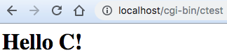
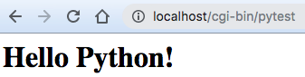

CGI(Common Gateway Interface)，通用网关接口，用于 web 服务器和外部应用程序（CGI 程序）之间的通信。为了探索 CGI 是如何工作的，我分别用 C 和 Python 语言写了段测试程序（均生成可执行程序），以及说明了一下解释型语言的 CGI 写法。
C 程序
编译：$ gcc ctest.c -o ctest。
// ctest.c
#include <stdio.h>
#include <stdlib.h>
int main() {
printf("Content-Type:text/html;charset=utf-8\r\n\r\n");
printf("<html><body><h1>Hello C!</h1></body></html>");
return 0;
}
Python 程序
pip 安装 pyinstaller，生成可执行文件：$ pyinstaller -F pytest.py。
# pytest.py
print('Content-Type:text/html;charset=utf-8\r\n\r\n')
print('<html><body><h1>Hello Python!</h1></body></html>')
CGI 脚本
以上两个 CGI 程序都是可执行文件，其实解释型语言也可以作为 CGI 程序运行，例如 Perl 的 CGI 程序如下：
#!/usr/bin/env perl
print "Content-Type:text/html;charset=utf-8\r\n\r\n";
print "<html><body><h1>Hello Perl!</h1></body></html>";
这种写法的关键是通过 #!/usr/bin/env perl 调用相应解释器，同样的 PHP 语言等也是一样的；包括以上的 Python 在头部添加 #!/usr/bin/env python 即可，那就可以省略 pyinstaller 了。
验证与总结
把以上生成的 ctest 和 pytest 程序放到apache的cgi-bin目录，即可通过浏览器访问。


试着把程序中带有 Content-Type:text/html;charset=utf-8\r\n\r\n 的代码整行删除，会发现服务器报错。经过测试，程序要包含 HTTP 头部信息，否则是非法的。
初步结论就是 CGI 程序是可以输出包含 HTTP 首部信息内容的可执行程序。web 服务器和 CGI 程序的交互步骤如下：
- web 服务器接收到 HTTP 请求并解析，根据路由配置调用相应的 CGI 程序，并把一些服务器信息和 HTTP 请求传到 CGI 程序中；
- CGI 程序根据服务器信息和 HTTP 请求报文执行相应的逻辑，最后输出 HTTP 响应报文；
- web 服务器（可能还会对 CGI 的结果进行一定修饰）把 CGI 结果传送到客户端；
至于 CGI 协议的具体内容则有待深入了解。